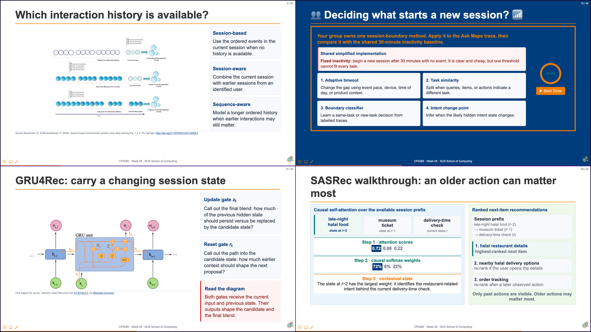
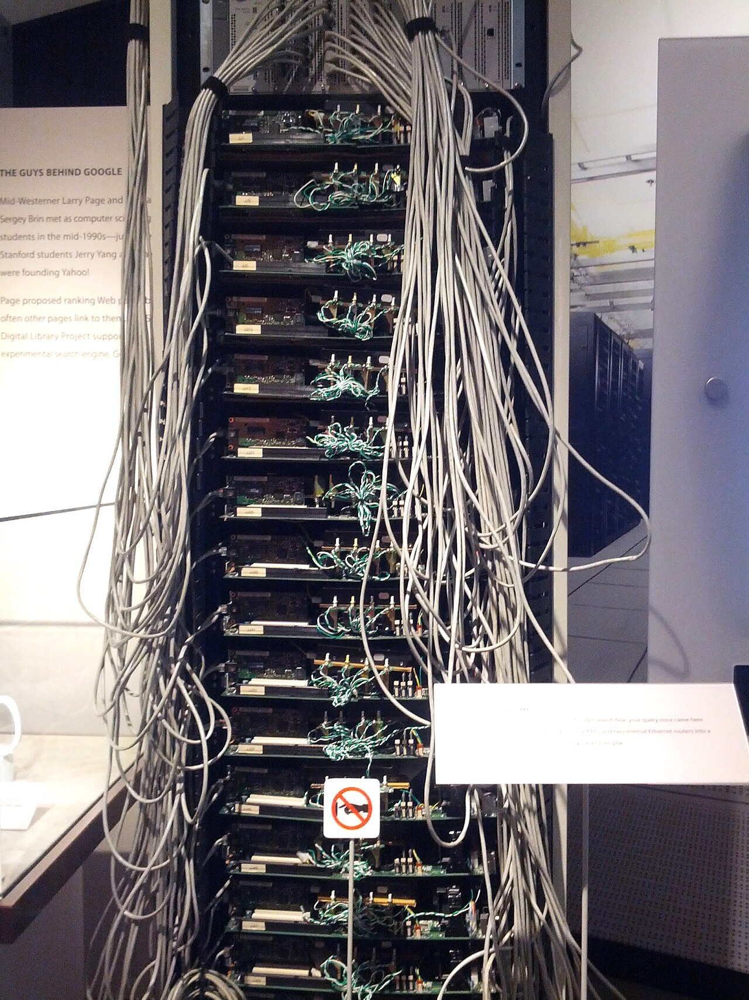
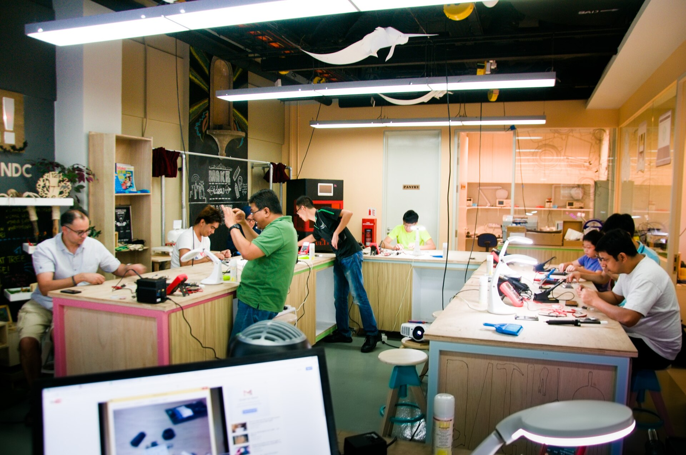

Retrieval and Ranking Architectures
CP4285 Modern Recommendation Systems — Week 06
soc-n.us/cp4285-t2610-w06
15 Sep 2026
01 Announcements and Context
Changelog
- 24 Aug 2026 — Refreshed the course slide deck and changelog.
🎰 Bandit Time: Start TempoQuiz
Open the room before Question 1
Open the host dashboard, then ask students to join with the live QR code or room code shown there.
Use the host dashboard — do not add a static code here.
Week 05 Recap
Wait for the room to settle, then release the first recap question.

A user’s long-term history is vegetarian cafés. In their current session, they search “late-night halal food”, open nearby restaurant pages, and check delivery times. What should the app consider now—and what should it not assume?
Canvas: 120–140 words by Mon, 14 Sep 2026, 23:59 SGT. Name two session-relevant item types, one risk of overwriting durable preference, and one non-click helpfulness signal.
Next week: retrieve plausible options before ranking and re-ranking them.
Week 6: Retrieval and Ranking Architectures
This week treats retrieval as a multi-stage systems problem: preserve useful evidence early, then spend expensive computation only where it can change the final answer.
Trace the cascade
Explain the distinct jobs of retrieval, ranking, re-ranking, and context assembly.
Budget the work
Reason about runtime, memory, candidate depth, embedding dimension, and token budget.
Design the hand-offs
Choose what an index, a lightweight ranker, and a deep re-ranker should each know.
Audit what is lost
Evaluate recall, provenance, visibility, and source diversity—not only a final relevance score.
Why retrieval alone cannot choose the final evidence
Each stage receives fewer items and is allowed to use more expensive evidence. A document removed early cannot be recovered later.
Why not use one deep scoring stage?
Apply joint attention to every retrieved candidate
Input: K₁ candidates, each with a query-document sequence of length L.
With K₁ = 1,000, every request fetches and jointly processes 1,000 document texts. The most expensive model is spent on many weak candidates.
Use deep joint scoring only after two cheaper cuts
02 Pipeline Design
Candidate generation, ranking, and re-ranking
TODO: add two-tower architectures and systems trade-offs.
Ethics Thread: Visibility allocation
Warning
TODO: examine stakeholder impacts of ranking choices.
☕ When Google results danced
In 2003, the Google Dance described a monthly index update. For several days, searches could alternate between old and new index versions—so rankings appeared to move.

Photographing Travis · CC BY 2.0 · Wikimedia Commons ↗
Summary
🔑 Pipeline stages allocate both computation and visibility.


CP4285 · Week 06 · NUS School of Computing